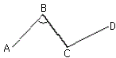
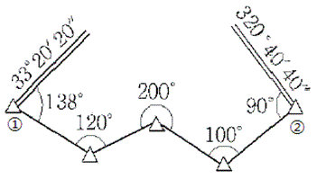
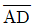
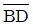
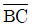
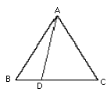
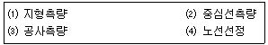
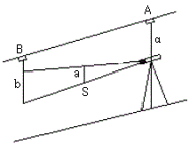
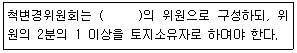

지적산업기사 (2016-03-06 기출문제)
1과목: 지적측량
1. 평판측량에서 발생하는 오차 중 도상에 가장 큰 영향을 주는 오차는?
- 소축척 지도의 구심오차
- 방향선의 제도오차
- 표정오차
- 한 눈금의 수평오차
(정답률: 82%)

2. 측량기준점을 구분할 때 지적기준점에 해당하지 않는 기준점은?
- 위성기준점
- 지적삼각점
- 지적도근점
- 지적삼각보조점
(정답률: 79%)
3. 지적측량의 구분으로 옳은 것은?
- 삼각측량, 도해측량
- 수치측량, 기초측량
- 기초측량, 세부측량
- 수치측량, 세부측량
(정답률: 92%)
4. 다음의 지적기준점성과표의 기록ㆍ관리 사항 중 반드시 등재하지 않아도 되는 것은?
- 경계점좌표
- 소재지와 측량연월일
- 지적삼각점의 명칭과 기준 원점명
- 자오선수차
(정답률: 55%)
5. 상한과 종ㆍ횡선차의 부호에 대한 설명으로 옳은 것은? (단, △x:종선차, △y:횡선차)
- 1상한에서 △x는 (-), △y는 (+)이다.
- 2상한에서 △x는 (+), △y는 (-)이다.
- 3상한에서 △x는 (-), △y는 (-)이다.
- 4상한에서 △x는 (+), △y는 (+)이다.
(정답률: 92%)
6. 축척이 1/500인 도면 1매의 면적이 1000m2이라면, 도면의 축척을 1/1000으로 하였을 때 도면 1매의 면적은 얼마인가?
- 2000m2
- 3000m2
- 4000m2
- 5000m2
(정답률: 63%)
7. 그림과 방위각이 다음과 같을 때, ∠ABC는? (단, Vab=38°15'30", Vcb=316°18'20")

- 78°02‘50“
- 81°57‘10“
- 181°57‘10“
- 278°02‘50“
(정답률: 68%)
8. 축척 1/600지역에서 지적도근측량 계산 시각 측선의 수평거리의 총 합계가 2210.52m일 때 2등도선일 경우 연결오차의 허용한계는?
- 약 0.62m
- 약 0.42m
- 약 0.22m
- 약 0.02m
(정답률: 62%)
9. 지적기준점측량의 작업순서로 가장 적합한 것은?
- 선점→관측→조표→계산
- 선점→계산→조표→관측
- 조표→선점→관측→계산
- 선점→조표→관측→계산
(정답률: 70%)
10. 다음 중 지적측량의 방법으로 옳지 않은 것은?
- 지적삼각점측량
- 지적도근점측량
- 세부측량
- 일반측량
(정답률: 83%)
11. 등록전환을 하는 경우 임야대장의 면적과 등록전환 될 면적의 오차허용범위에 대한 계산식은? (단, A:오차허용면적, M:임야도의 축척분모, F:등록전환 될 면적)
- A=0.026M√F
- A=0.023M√F
- A=0.0232M√F
- A=0.0262M√F
(정답률: 79%)
12. 지적도근점측량에서 지적도근점의 구성 형태가 아닌 것은?
- 결합도선
- 폐합도선
- 다각망도선
- 개방도선
(정답률: 83%)
13. 광파기측량방법에 따라 다각망도선법으로 지적삼각보조점측량을 할 때의 기준으로 옳은 것은?
- 1도선의 거리는 8킬로미터 이하로 할 것
- 1도선의 거리는 6킬로미터 이하로 할 것
- 1도선의 점의 수는 기지점과 교점을 포함하여 7점 이하로 할 것
- 1도선의 점의 수는 기지점과 교점을 포함하여 5점 이하로 할 것
(정답률: 81%)
14. 그림과 같은 지적도근점측량 결합도선에서 관측값의 오차는 얼마인가? (단, ①에서 출발방위각 33°20‘20“이고, ②에서 폐색방위각은 320°40’40”이었다.)

- 0°39‘40“
- 0°49‘40“
- 1°39‘40“
- 1°49‘40“
(정답률: 42%)
15. 두 점간의 거리가 100m이고 경사도가 60°일 때의 수평거리는?
- 30m
- 40m
- 50m
- 60m
(정답률: 78%)
16. 지적측량성과와 검사 성과의 연결교차가 일정허용범위 이내일 때에는 그 지적측량성과에 관하여 다른 입증을 할 수 있는 경우를 제외하고는 그 측량성과로 결정하여야 한다. 다음 중 허용범위에 대한 기준으로 옳은 것은?
- 지적삼각점:0.40m
- 지적삼각점:0.60m
- 지적삼각보조점:0.45m
- 지적삼각보조점:0.25m
(정답률: 88%)
17. 지적복구측량에 대한 설명으로 옳은 것은?
- 수해지역의 측량
- 축척변경지역의 측량
- 지적공부 멸실 지역의 측량
- 임야대장 등록지를 토지대장에 옮기는 측량
(정답률: 80%)
18. 세부측량의 기준 및 방법에 대한 내용으로 옳지 않은 것은?
- 평판측량방법에 있어서 도상에 영향을 미치지 아니하는 지상거리의 축척별 허용범위는 M/20밀리미터로 한다.(M=축척분모)
- 평판측량방법에 따른 세부측량을 교회법으로 하는 경우 3방향 이상의 교회에 따른다.
- 평판측량방법에 따른 세부측량에서 측량결과 또는 그 토지가 등록된 도면과 동일한 축척으로 작성한다.
- 평판측량방법에 따른 세부측량을 도선법으로 하는 경우, 도선의 변은 20개 이하로 한다.
(정답률: 80%)
19. 다음 중 지오이드(Geoid)에 대한 설명으로 옳은 것은?
- 지정된 점에서 중력방향에 직각을 이룬다.
- 수준원점은 지오이드면에 일치한다.
- 지구타원체의 면과 지오이드면은 일치한다.
- 기하학적인 타원체를 이루고 있다.
(정답률: 50%)
20. 평면직각종횡선의 종축의 북방향을 기준으로 시계방향으로 측정한 각으로, 지적측량에서 주로 사용하는 방위각은?
- 진북방위각
- 도북방위각
- 자북방위각
- 천북방위각
(정답률: 63%)
2과목: 응용측량
21. 초점거리 150mm, 경사각이 30°일 때 주점으로부터 등각점까지의 길이는?
- 20mm
- 40mm
- 60mm
- 80mm
(정답률: 54%)
22. 등고선의 성질에 대한 설명으로 틀린 것은?
- 높이가 다른 등고선은 서로 교차하거나 합쳐지지 않는다.
- 동일한 등고선 상의 모든 점의 높이는 같다.
- 등고선은 반드시 폐합하는 폐곡선이다.
- 등고선과 분수선은 직각으로 교차한다.
(정답률: 77%)
23. 수준측량의 용어에 대한 설명으로 옳지 않은 것은?
- 전시:표고를 알고자 하는 곳에 세운 표척의 읽음값
- 중간점:그 점의 표고만을 구하고자 표척을 세워 전시만 취하는 점
- 후시:측량해 나가는 방향을 기준으로 기계의 후방을 시준한 값
- 기계고:기준면에서 시준선까지의 높이
(정답률: 56%)
24. 다음 중 완화곡선에 사용되지 않는 것은?
- 클로소이드 곡선
- 렘니스케이트 곡선
- 2차 포물선
- 3차 포물선
(정답률: 84%)
25. 중간점이 많은 종단수준측량에 적합한 야장기입방법은?
- 고차식
- 기고식
- 승강식
- 종란식
(정답률: 84%)
26. 위성측량으로 지적삼각점을 설치하고자 할 때 가장 적합한 측량방법은?
- 실시간 이동상대측량(Real Time Kinematic Survey)
- 이동상대측량(Kinematic Survey)
- 정지상대측량(Static Survey)
- 방향관측법
(정답률: 73%)
27. 직접수준측량시 주의사항에 대한 설명으로 틀린 것은?
- 작업 전에 기기 및 표척을 점검 및 조정한다.
- 전후의 표척거리는 등거리로 하는 것이 좋다.
- 표척을 세우고 나서는 표척을 움직여서는 안된다.
- 기포관의 기포는 똑바로 중앙에 오도록 한 후 관측을 한다.
(정답률: 65%)
28. 항공사진측량용 사진기 중 피사각이 90°정도로 일반도화 및 판독용으로 많이 사용하는 것은?
- 보통각사진기
- 광각사진기
- 초광각사진기
- 협각사진기
(정답률: 78%)
29. 그림과 같은 △ABC에서

로 △ABD:△ABC=1:3으로 분할하려고 할 때,
의 거리는? (단,
=42.6m)(오류 신고가 접수된 문제입니다. 반드시 정답과 해설을 확인하시기 바랍니다.)
- 2.66m
- 4.73m
- 10.65m
- 14.20m
(정답률: 66%)
30. 노선의 결정에 고려하여야 할 사항으로 옳지 않은 것은?
- 가능한 경사가 완만할 것
- 절토의 운반거리가 짧을 것
- 배수가 완전할 것
- 가능한 곡선으로 할 것
(정답률: 79%)
31. 노선측량의 일반적 작업순서로 옳은 것은?

- ⑷→⑴→⑵→⑶
- ⑴→⑶→⑵→⑷
- ⑷→⑶→⑵→⑴
- ⑵→⑴→⑶→⑷
(정답률: 75%)
32. 사진측량에서 표정 중, 촬영 당시의 광속의 기하 상태를 재현하는 작업으로 기준점 위치, 렌즈의 왜곡, 사진기의 초점거리와 사진의 주점을 결정하는 작업은?
- 내부표정
- 상호표정
- 절대표정
- 접합표정
(정답률: 65%)
33. 경사진 터널 내에서 2점간의 표고차를 구하기 위하여 측량한 결과 아래와 같은 결과를 얻었다. AB의 고저차 크기는? (단, a=1.20m, b=1.65m, α=-11°, S=35m)

- 5.32m
- 6.23m
- 7.32m
- 8.23m
(정답률: 61%)
34. 다음 중 항공사진의 판독만으로 구별하기 가장 어려운 것은?
- 능선과 계곡
- 밀밭과 보리밭
- 도로와 철도선로
- 침엽수와 활엽수
(정답률: 70%)
35. 자침편차가 동편 3°20“인 터널 내에서 어느 측선의 방위 S24°30'W를 관측했을 경우 이 측선의 진북방위각은?
- 152°10‘
- 158°50‘
- 201°10‘
- 207°50‘
(정답률: 36%)
36. 등고선도로서 알 수 없는 것은?
- 산의 체적
- 댐의 유수량
- 연직선 편차
- 지형의 경서
(정답률: 67%)
37. 사진측량의 특수 3점이 아닌 것은?
- 주점
- 연직점
- 수평점
- 등각점
(정답률: 84%)
38. 노선연장 2km를 결합도선으로 측량할 때 폐합비를 1/100000으로 제한하려면 폐합오차의 허용한계는 얼마로 해야 하는가?
- 0.2cm
- 0.5cm
- 1.0cm
- 2.0cm
(정답률: 51%)
39. 비고 50m의 구릉지에서 초점거리 210mm의 사진기로 촬영한 사진의 크기가 23cm×23cm이고, 축척이 1:25000이었다. 이 사진의 비고에 의한 최대 변위량은?
- 1.5mm
- 3.2mm
- 4.8mm
- 5.2mm
(정답률: 26%)
40. GNSS(위성측위) 관측시 주의할 사항으로 거리가 먼 것은?
- 측정점 주위에 수신을 방해하는 장애물이 없도록 하여야 한다.
- 충분한 시간동안 수신이 이루어져야 한다.
- 안테나 높이, 수신시간과 마침시간 등을 기록한다.
- 온도의 영향을 많이 받으므로 너무 춥거나 더우면 관측을 중단한다.
(정답률: 87%)
3과목: 토지정보체계론
41. 토지의 고유번호는 총 몇 자리로 구성하는가?
- 10자리
- 12자리
- 15자리
- 19자리
(정답률: 86%)
42. 토지정보체계와 지리정보체계에 대한 설명으로 옳지 않은 것은?
- 토지정보체계의 공간정보단위는 필지다.
- 지리정보체계의 축척은 소축척이다.
- 토지정보체계의 기본도는 지형도이다.
- 지리정보체계는 경사, 고도, 환경, 토양, 도로 등이 기반 정보로 운영된다.
(정답률: 66%)
43. 지적전산정보시스템에서 사용자권한 등록 파일에 등록하는 사용자번호 및 비밀번호에 관한 사항으로 옳지 않은 것은?
- 사용자의 비밀번호는 변경할 수 없다.
- 한 번 부여된 사용자번호는 변경할 수 없다.
- 사용자번호는 사용자권한 등록관리청별로 일련번호로 부여하여야 한다.
- 사용자권한 등록관리청은 사용자번호를 따로 관리할 수 있다.
(정답률: 82%)
44. 다음 중 중첩분석의 일반적인 유형에 해당하지 않는 것은?
- 점과 폴리곤의 중첩
- 선과 폴리곤의 중첩
- 폴리곤과 폴린곤의 중첩
- 점과 선의 중첩
(정답률: 80%)
45. GPS 측량의 장ㆍ단점으로 옳지 않은 것은?
- 직접적인 관찰이 불가능한 지점간의 측량이 가능하다.
- 기후에 좌우되지 않으나 야간측량은 불가능하다.
- 위성에 의한 전파를 이용한 방식이므로 건물사이, 수중, 숲속에서의 측량은 불가능하다.
- 고정밀도 측위를 위해서는 별도로 기준국을 필요로 한다.
(정답률: 88%)
46. 다음 중 점, 선, 면으로 표현된 객체들 간의 공간관계를 설정하여 각 객체들 간의 인접성, 연결성, 포함성 등에 관한 정보를 파악하기 쉬우며, 다양한 공간분석을 효율적으로 수행할 수 있는 자료구조는?
- 스파게티(spaghetti) 구조
- 래스터(raster) 구조
- 위상(topology) 구조
- 그리드(grid) 구조
(정답률: 75%)
47. 파일처리 방식과 비교하여 데이터베이스 관리시스템(DBMS) 구축의 장점으로 옳은 것은?
- 하드웨어 및 소프트웨어의 초기 비용이 저렴하다.
- 시스템의 부가적인 복잡성이 완전히 제거된다.
- 집중화된 통제에 따른 위험이 완전히 제거된다.
- 자료의 중복을 방지하고 일관성을 유지할 수 있다.
(정답률: 83%)
48. 다음 중 한국토지정보시스템의 약자로 옳은 것은?
- LMIS
- KMIS
- KLIS
- PBLIS
(정답률: 82%)
49. 다음 중 토지기록 전산화 작업의 목적과 거리가 먼 것은?
- 토지 관련 정책 자료의 다목적 활용
- 민원의 신속하고 정확한 처리
- 토지 소유 현황의 파악
- 중앙 통제형 행정전산화의 촉진
(정답률: 82%)
50. 다음 중 토지소유권에 대한 정보를 검색하고자 하는 경우 식별자로 사용하기에 가장 적절한 것은?
- 주소
- 성명
- 주민등록번호
- 생년월일
(정답률: 80%)
51. 벡터데이터의 구조에 대한 설명으로 틀린 것은?
- 점은 하나의 좌표로 표현된다.
- 선은 여러 개의 좌표로 구성된다.
- 면은 3개 이상의 점의 집합체로 폐합된 다각형 형태의 구조를 갖는다.
- 점ㆍ선ㆍ면의 형태를 이용한 지리적 객체는 4차원의 지도 형태이다.
(정답률: 80%)
52. 효율적으로 공간데이터를 분석, 처리하기 위한 고려사항으로 가장 거리가 먼 것은?
- 공간 데이터의 분포 및 군집성
- 하드웨어 설치 장소
- 변화하는 공간데이터의 갱신
- 효율적인 저장 구조
(정답률: 77%)
53. DBMS의 기능 중 하나의 데이터베이스 형태로 여러 사용자들이 요구하는 대로 데이터를 기술해 줄 수 있도록 데이터를 조직하는 기능은 무엇인가?
- 저장기능
- 정의기능
- 제어기능
- 조작기능
(정답률: 55%)
54. 검색 방법 중 찾고자 하는 레코드 키가 있음직한 위치를 추정하여 검색하는 방법은?
- 보간(Interpolation) 검색
- 피보나치(Fibonacci) 검색
- 이진(Binary) 검색
- 순차(Sequential) 검색
(정답률: 76%)
55. 다음 중 연속도면의 제작 편집에 있어 도곽선 불일치의 원인에 해당하지 않는 것은?
- 통일된 원점의 사용
- 도면축척의 다양성
- 지적도면의 관리 부실
- 지적도면 재작성의 부정확
(정답률: 74%)
56. 토지정보체계의 구성요소에 해당하지 않는 것은?
- 기준점
- 데이터베이스
- 소프트웨어
- 조직과 인력
(정답률: 82%)
57. 래스터데이터와 벡터데이터에 대한 설명으로 틀린 것은?
- 래스터데이터의 정밀도의 격자간격에 의하여 결정된다.
- 벡터데이터의 자료구조는 래스터데이터 보다 복잡하다.
- 벡터데이터의 자료입력에는 스캐너가 주로 이용된다.
- 래스터데이터의 도형표면은 면(화소, 셀)으로 표현된다.
(정답률: 80%)
58. 다음 중 공개된 상업용 소프트웨어와 자료구조의 연결이 잘못된 것은?
- AutoCAD-DXF
- ArcView-SHP/SHX/DBF
- MicroStation-IFS
- Maplnfo-MID/MIF
(정답률: 67%)
59. 지저도와 시ㆍ군ㆍ구 대장 정보를 기반으로 하는 지적행정 시스템의 연계를 통해 각종 지적 업무를 수행할 수 있도록 만들어진 정보시스템은?
- 필지중심토지정보시스템
- 지리정보시스템
- 도시계획정보시스템
- 시설물관리시스템
(정답률: 82%)
60. GIS의 필요성과 관계가 없는 것은?
- 전문부서 간의 업무의 유기적 관계를 갖기 위하여
- 정보의 신뢰도를 높이기 위하여
- 자료의 중복 조사 방지를 위하여
- 행정환경변화의 수동적 대응을 하기 위하여
(정답률: 76%)
4과목: 지적학
61. 다음 중 지적과 등기를 비교하여 설명한 내용으로 옳지 않은 것은?
- 지적은 실질적 심사주의를 채택하고 등기는 형식적 심사주의를 채택한다.
- 등기는 토지의 표시에 관하여는 지적을 기초로 하고 지적의 소유자 표시는 등기를 기초로 한다.
- 지적과 등기는 국정주의와 직권등록주의를 채택한다.
- 지적은 토지에 대한 사실관계를 공시하고 등기는 토지에 대한 권리관계를 공시한다.
(정답률: 50%)
62. 다음 중 다목적지적제도의 구성요소에 해당하지 않는 것은?
- 측지기준망
- 행정조직도
- 지적중첩도
- 필지식별번호
(정답률: 76%)
63. 우리나라 지적제도의 기원으로 균형 있는 촌락의 설치와 토지분금 및 수확량의 파악을 위해 실시한 고조선시대의 지적제도로 옳은 것은?
- 정전제(井田制)
- 경무법(頃畝法)
- 결부제(結負制)
- 과전법(科田法)
(정답률: 64%)
64. 토지조사사업 당시 지역선의 대상이 아닌 것은?
- 소유자가 같은 토지와의 구획선
- 소유자가 다른 토지 간의 사정된 경계선
- 토지조사 시행지와 미시행지와의 지계선
- 소유자를 알 수 없는 초지와의 구획선
(정답률: 46%)
65. 토지조사령이 제정된 시기는?
- 1898년
- 19⑤년
- 1912년
- 1916년
(정답률: 72%)
66. 정약용이 목민심서를 통해 주장한 양전개정론의 내용이 아닌 것은?
- 망척제의 시행
- 어린도법의 시행
- 경무법의 시행
- 방량법의 시행
(정답률: 70%)
67. 토지의 표시사항 중 면적을 결정하기 위하여 먼저 결정되어야 할 사항은?
- 토지소재
- 지번
- 지목
- 경계
(정답률: 78%)
68. 내두좌평(內頭佐平)이 지적을 담당하고 산학박사(算學博士)가 측량을 전담하여 관리하도록 했던 시대는?
- 백제시대
- 신라시대
- 고려시대
- 조선시대
(정답률: 68%)
69. 지적에 관련된 행정조직으로 중앙에 주부(主簿)라는 직책을 두어 전부(田簿)에 관한 사항을 관장하게 하고 토지측량 단위로 경무법을 사용한 국가는?
- 백제
- 신라
- 고구려
- 고려
(정답률: 71%)
70. 다음 중 토렌스시스템(Torrens System)이 창안된 국가는?
- 영국
- 프랑스
- 네덜란드
- 오스트레일리아
(정답률: 79%)
71. 토지조사사업 당시 지적공부에 등록 되었던 지목의 분류에 해당하지 않는 것은?
- 지소
- 성첩
- 염전
- 잡종지
(정답률: 60%)
72. 다음의 토지 표시사항 중 지목의 역할과 가장 관계가 적은 것은?
- 토지 형질변경의 규제
- 사용 현황의 표상(表象)
- 구획정리지의 토지 용도 유지
- 사용 목적의 추측
(정답률: 53%)
73. 통일신라시대 촌락단위의 토지 관리를 위한 장부로 조세의 징수와 부역(賦役)징발을 위한 기초자료로 활용하기 위한 문서는?
- 결수연명부
- 장적문서
- 지세명기장
- 양안
(정답률: 73%)
74. 다음 중 토지조사사업 당시 일반적으로 지번을 부여하지 않았던 지목에 해당하는 것은?
- 성첩
- 공원지
- 지소
- 분묘지
(정답률: 49%)
75. 우리나라 임야조사사업 당시의 재결기관은?
- 고등토지조사위원회
- 임시토지조사국
- 도지사
- 임야심사위원회
(정답률: 75%)
76. 지목의 설정에서 우리나라가 채택하지 않는 원칙은?
- 지목법정주의
- 복식지목주의
- 주지목추종주의
- 일필일목주의
(정답률: 82%)
77. 다음 중 근대적 지적제도의 효시가 되는 나라는?
- 한국
- 대만
- 일본
- 프랑스
(정답률: 85%)
78. 토지조사사업에서 일필지 조사의 내용과 가장 거리가 먼 것은?
- 지목의 조사
- 지주의 조사
- 지번의 조사
- 미개간지의 조사
(정답률: 70%)
79. 다음 중 일자오결제에 대한 설명이 옳지 않은 것은?
- 양전의 순서에 따라 1필지마다 천자문의 자번호를 부여 하였다.
- 천자문의 각 자내(字內)에 다시 제일(第一), 제이(第二), 제삼(第三) 등의 번호를 붙였다.
- 천자문의 1자는 기경전의 경우만 5결이 되면 부여하고 폐경전에는 부여하지 않는다.
- 숙종 35년 해서양전사업에서는 일자오결의 양전 방식이 실시되었으나 폐단이 있었다.
(정답률: 63%)
80. 다목적 지적의 구성요소와 가장 거리가 먼 것은?
- 측지기준망
- 기본도
- 지적도
- 지형도
(정답률: 70%)
5과목: 지적관계
81. 도시개발사업 등으로 인한 토지의 이동은 언제를 기준으로 그 토지의 이동이 이루어진 것으로 보는가?
- 토지의 형질변경 등의 공사가 준공된 때
- 토지의 형질변경 등의 공사가 착공한 때
- 토지의 형질변경 등의 공사가 허가한 때
- 토지의 형질변경 등의 공사가 중지된 때
(정답률: 75%)
82. 다음 중 지목을 “도로”로 볼 수 없는 것은?
- 고속도로의 휴게소 부지
- 2필지 이상에 진입하는 통로로 이용되는 토지
- 도로법 등 관계법령에 의하여 도로로 개설된 토지
- 아파트, 공장 등 단일 용도의 일정한 단지 안에 설치된 통로
(정답률: 85%)
83. 우리나라의 지목은 총 몇 개의 종류로 구분하여 정하는가?
- 24개
- 26개
- 28개
- 30개
(정답률: 83%)
84. 지적측량수행자가 손해배상책임을 보장하기 위하여 보증보험에 가입하여야 하는 보증금액 기준이 모두 옳은 것은? (단, 지적측량업자의 경우 보장기간은 10년 이상이다.)
- 지적측량업자:1억원이상, 한국국토정보공사:10억원 이상
- 지적측량업자:1억원이상, 한국국토정보공사:20억원 이상
- 지적측량업자:3억원이상, 한국국토정보공사:10억원 이상
- 지적측량업자:3억원이상, 한국국토정보공사:20억원 이상
(정답률: 79%)
85. 지목을 지적도면에 등록하는 때 표기하는 지목 부호가 옳지 않은 것은?
- 주차장→차
- 공장용지→장
- 유원지→원
- 주유소용지→유
(정답률: 80%)
86. 다음 중 토지소유자를 대신하여 토지의 이동 신청을 할 수 없는 자는? (단, 등록사항 정정 대상토지는 제외한다.)
- 행정자치부 차관
- 민법 제 404조의 규정에 의한 채권자
- 국가 또는 지방자치단체가 취득하는 토지의 경우에는 그 토지를 관리하는 지방자치단체의 장
- 공공사업 등으로 인해 학교, 도로, 철도, 하천, 구거, 유지, 수도용지 등의 지목으로 되는 토지의 경우에 그 사업시행자
(정답률: 70%)
87. 주앙지적위원회는 위원장 1명과 부위원장 1명을 포함하여 몇 명으로 구성하는가?
- 3명 이상 7명 이하
- 5명 이상 10명 이하
- 7명 이상 12명 이하
- 15명 이상 20명 이하
(정답률: 81%)
88. 지적소관청은 복구자료의 조사 또는 복구측량 등이 완료되어 지적공부를 복구하려는 경우, 복구하려는 토지의 표시 등을 시ㆍ군ㆍ구 게시판 및 인터넷 홈페이지에 며칠 이상 게시하여야 하는가?
- 5일
- 7일
- 10일
- 15일
(정답률: 89%)
89. 행정구역의 변경, 도시개발사업의 시행, 지번변경, 축척변경, 지번정정 등의 사유로 지번에 결번이 생긴 때에 지적소관청이 결번 처리 방법으로 옳은 것은?
- 결번된 지번은 새로이 토지이동이 발생하면 지번을 부여한다.
- 지체없이 그 사유를 결번대장에 적어 영구히 보존한다.
- 결번된 지번은 토지대장에서 말소하고 토지대장을 폐기한다.
- 행정구역의 변경으로 결번된 지번은 새로이 지번을 부여할 경우에 지번을 부여한다.
(정답률: 71%)
90. 축척변경 시행에 따른 청산금의 납부 및 교부에 관한 설명으로 옳지 않은 것은?
- 지적소관청은 청산금의 결정을 공고한 날부터 20일 이내에 토지소유자에게 납부고지 또는 수령통지를 해야 한다.
- 납부고지를 받은 자는 고지를 받은 날부터 3개월 이내에 청산금을 축척변경위원회에 납부해야 한다.
- 청산금에 관한 이의 신청은 납부고지 또는 수령 통지를 받은 날부터 1개월 이내에 지적소관청에 할 수 있다.
- 지적소관청은 청산금을 지급받을 자가 행방불명 등으로 받을 수 없거나 받기를 거부 할 때에는 그 청산금을 공탁할 수 있다.
(정답률: 53%)
91. 다음 중 지적도의 등록사항이 아닌 것은?
- 주요 지형표시
- 삼각점의 위치
- 건축물의 위치
- 지적도면의 색인도
(정답률: 33%)
92. 경계점좌표등록부의 등록사항이 아닌 것은?
- 경계
- 부호도
- 지적도면의 번호
- 토지의 고유번호
(정답률: 42%)
93. 신규등록하는 토지의 소유자에 관한 사항을 지적공부에 등록하는 방법으로 옳은 것은?
- 등기부등본에 의하여 등록
- 지적소관청의 조사에 의하여 등록
- 법원의 최초판결에 의하여 등록
- 토지소유자의 신고에 의하여 등록
(정답률: 56%)
94. 다음 중 토지의 합병을 신청할 수 없는 경우에 해당하지 않는 것은?
- 합병하려는 토지의 지목이 서로 다른 경우
- 합병하려는 토지의 등급이 서로 다른 경우
- 합병하려는 토지의 지번부여지역이 서로 다른 경우
- 합병하려는 토지의 지적도 및 임야도의 축척이 서로 다른 경우
(정답률: 72%)
95. 토지소유자가 지목변경을 신청하고자 하는 때에 지목변경사유가 기재된 신청서에 첨부해야 할 서류가 아닌 것은?
- 건축물의 용도가 변경되었음을 증명하는 서류의 사본
- 토지의 용도가 변경되었음을 증명하는 서류의 사본
- 토지의 형질변경 등의 개발행위허가를 증명하는 서류의 사본
- 국유지ㆍ공유지의 경우에는 용도폐지 되었거나 사실상 공공용으로 사용되고 있지 아니함을 증명하는 서류의 사본
(정답률: 48%)
96. 지상경계를 새로이 결정하고자 하는 경우, 그 기준으로 옳지 않은 것은?
- 연접되는 토지 간에 높낮이 차이가 없는 경우에는 그 구조물 등의 중앙
- 도로ㆍ구거 등의 토지에 절토된 부분이 있는 경우에는 그 경사면의 상단부
- 토지가 해면 또는 수면에 접하는 경우에는 최대만조위 또는 최대만수위가 되는 선
- 공유수면매립지의 토지 중 제방 등을 토지에 편입하여 등록하는 겨울에는 안쪽 어깨부분
(정답률: 79%)
97. 다음 중 1필지를 정함에 있어 주된 용도의 토지에 편입하여 1필지로 할 수 없는 종된 용도의 토지의 지목은?
- 대
- 전
- 구거
- 도로
(정답률: 79%)
98. 다음 축척변경위원회의 설명 중 ()안에 적합한 것은?

- 5명 이상 10명 이하
- 10명 이상 15명 이하
- 15명 이상 25명 이하
- 25명 이상 30명 이하
(정답률: 82%)
99. 다음 중 지적공부의 복구자료가 될 수 없는 것은?
- 지적 편집도
- 측량 결과도
- 복재된 지적공부
- 토지이동정리 결의서
(정답률: 56%)
100. 지적서고의 설치 및 관리 기준에 관한 설명으로 옳지 않은 것은?
- 연중평균습도는 65±5%를 유지하도록 한다.
- 전기시설을 설치하는 때에는 이중퓨즈를 설치한다.
- 지적공부 보관상자는 벽으로부터 15cm 이상 띄워야 한다.
- 지적 관계 서류와 함께 지적측량장비를 보관할 수 있다.
(정답률: 70%)